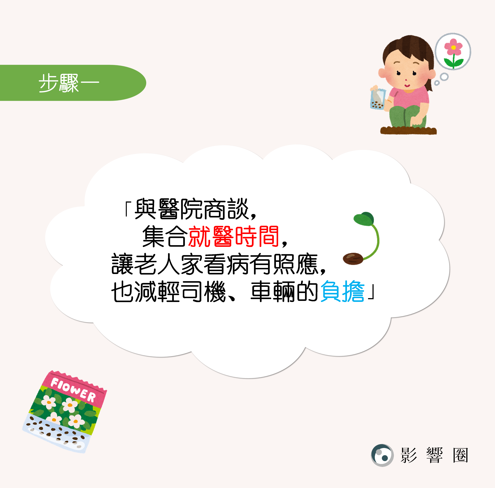

位於台中市和平區、鄰近梨山的松茂部落，為一泰雅族部落，海拔高達1800M。 傳奇歌手·張雨生就是松茂部落出身。

因為部落周圍環繞著茂密的松林而得名「松茂」。
居民多務農，種植雪梨等高經濟作物維生。

每年九月，就是高山雪梨的產季。
從松茂部落下山，到台中市區看病，單程開車需要2.5~3小時，來回就需要6小時左右。 且下山必經的中橫便道，有道路管制，一天僅開放三個時段出入，對原鄉老弱的就醫族群來說，身心與經濟上都是不小的負擔。

路段管制處，僅能在規定時段通過。

等待上山的隊伍無限綿延。
無助居民的心聲：
「一天來回是不可能的，
因為有管制 — 也不知道該怎麼辦、住旅館也是要花錢…」
松茂部落的居民，前往台中市區或者宜蘭羅東就醫的比例，大約是1 : 1。
但因為補助的限制，跨縣市就醫的的居民們是無法得到補助的。
目前的政府政策、沒有辦法幫助到這些原鄉居民的狀況。
由於921地震造成災害，前往台中的中橫公路不通，部分居民不得已只好前往較遠的羅東地區看病拿藥，所有的病歷與熟識的醫生都在那裏， 若是因為補助而要改往台中就診，等同於要重新建立這些關係。

就醫居民的疑問：
「既然有那個車子(長照交通)，
為甚麼只能補助一半(一邊)呢」
對偏鄉的老人來說，前往就醫是一場硬仗，因為老人常會有複數的疾病，就醫的天數勢必會拖長，住宿也會造成經濟負擔。 且不論是搭乘公車(班次問題)或是自行開車(管制問題)往返，都有各自的不便之處。
| 路線 | 去程時間 | 回程時間 |
|---|---|---|
| 羅東-梨山 | 07:00 12:20 |
13:30 |
| 宜蘭-梨山 | 07:30 12:40 |
13:30 |
上下山的班次稀少，且難以配合就診時間。
(資料取自：國光客運網站 )

路途因為種種的不便，
年逾八旬，卻仍自行開車就醫的老爺爺。
因為疾病種類、就診進度的不同，每位老人家需要下山回診的時間，都是錯開的。一對夫妻所需要下山的時間，可能會相差到一個月之久， 不僅看病的的人不方便，在資源運用的層面上，也沒有辦法同時多載一點人往返、讓資源得到最適配置。
居民的反映：
每一個老人家要去回診的時間都不一樣，
兩個人也好、能不能在同一個月、同一天去接受服務。
【突破原有限制】
從基本做起，試圖改善就醫旅程。
讓更多人加入我們的行動，
走進我們的影響圈！